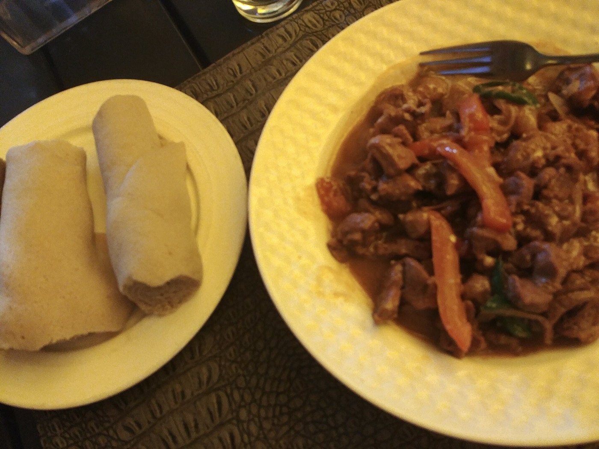
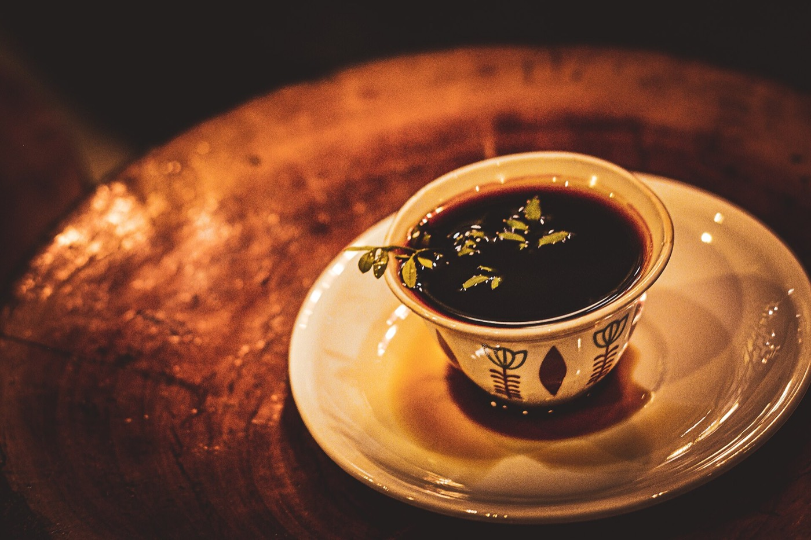
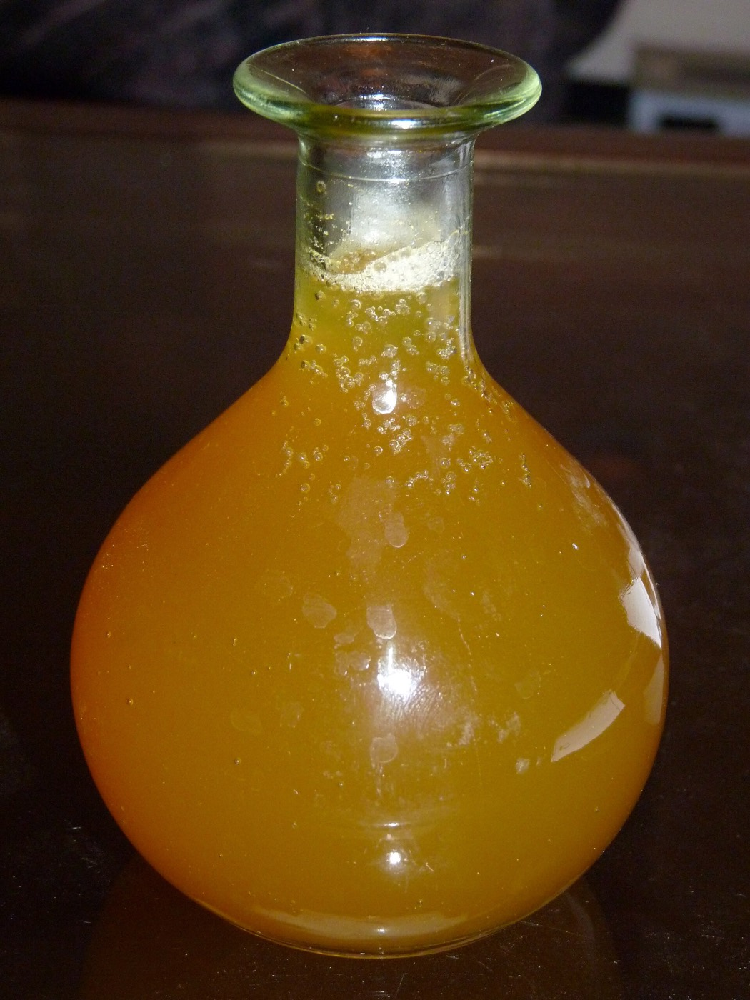

Tire Siga ጥሬ ሥጋ
SignatureFresh, carefully selected raw beef, served with mitmita, awaze and senafich — our house speciality.
ምግብ ዝርዝር
The Menu
Every dish is served on fresh injera to share. Ask your server about spice levels — we're happy to make it milder or hotter.

Fresh, carefully selected raw beef, served with mitmita, awaze and senafich — our house speciality.
Ox meat sautéed with onion, jalapeño, rosemary and niter kibbeh — lebleb (lightly cooked) or well done.

Tender goat sautéed with onion, green chilli and butter, brought sizzling to the table in a clay pan.
Finely chopped tripe, liver and lean meat with onion, mitmita and spiced butter — raw, lebleb or cooked.
Strips of beef pan-seared with awaze and fresh herbs — smoky, juicy and made for sharing.

Our grand sharing mesob: tire siga, ox and goat tibs and dulet with vegetarian sides.


A colourful sampler of our fasting dishes — shiro, misir, gomen, atkilt and fresh salad.
Velvety ground chickpea stew with garlic and berbere, served bubbling in a clay pot.
Red lentils cooked down with onions, garlic and berbere until rich and silky.
Collard greens braised with garlic, ginger and green chilli.
Cabbage, carrots and potatoes gently stewed with turmeric and onion.
Fresh house-made cottage cheese with chopped greens and spiced butter.


Green beans roasted at your table, ground by hand and brewed in a clay jebena — served in three rounds with popcorn and incense.

Traditional honey wine, golden and gently sweet, served in a berele.
Local and imported beers, served ice cold.
A selection of Ethiopian and imported red and white wines.
Whisky, gin, vodka, traditional areke and more.
Soft drinks, bottled water, fresh juices and layered spris.